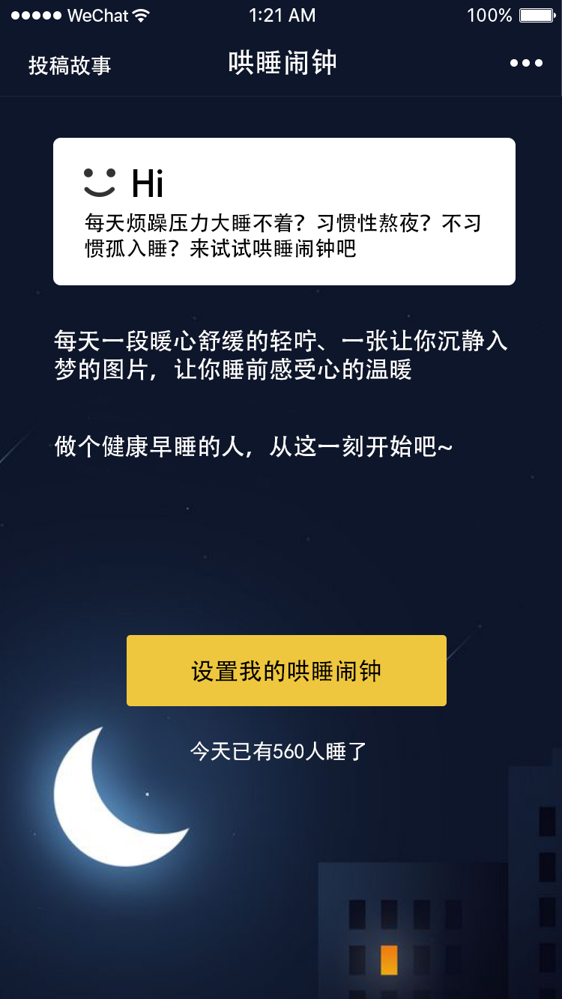
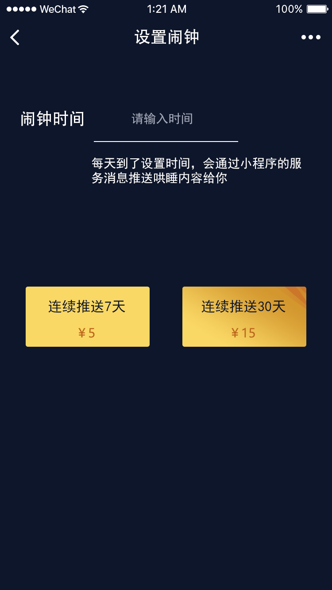
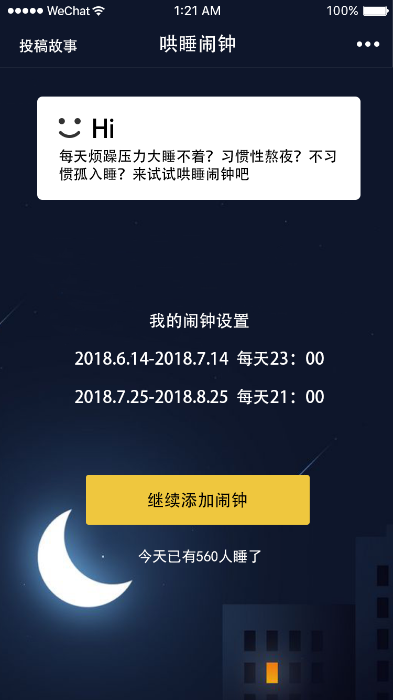

未登录状态
当未登录时进入小程序显示如左图
1、点击设置我的哄睡闹钟，弹出授权登录弹窗，授权成功后跳转到设置闹钟页面
2、如果用户未设置任何闹钟，状态也同左图显示
3、今天已有XXX人睡了，这个数据取今天有多少人查看了今天的服务消息
设置闹钟
1、闹钟时间点击后，弹出时间选择器：XX：XX，显示时、分选择
2、当选择完成闹钟时间后，才可以点击连续推送7天或者30天
3、点击选择推送多少天按钮后，弹出日期选择器，显示年月日，已过去的日期不显示
4、选择开启日期后，判断：
1）开启日期是否和已设置的闹钟周期有重合，有重合则不允许提交，toast提示“和已设置的闹钟有重合”
2）无重合后，拉起微信支付，支付成功后返回首页
已设置闹钟状态
1、已设置闹钟后，首页展示如左图
2、我的闹钟设置中，显示我所设置的闹钟记录，已过期的闹钟记录不显示，按从新到旧排序